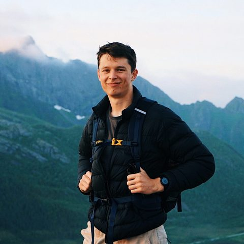

Who we are
Formation Research Ltd is a UK-based not-for-profit company limited by guarantee, with 501(c)(3) equivalency determination through NGO Source. Our mission is to understand how lock-in happens and to build high-impact interventions that reduce the risk.
A lock-in is a situation where some feature of the world, typically a negative element of human culture, becomes stable for a long time. We focus on the most undesirable scenarios: AI-enabled totalitarianism and extreme concentrations of power.
The scenarios we study
AI-enabled totalitarianism
A ruler could use AI systems to extend their own lifespan and run mass surveillance, producing a stable totalitarian regime with no natural end.
Extreme power concentration
The people at the forefront of AI could end up with enormous leverage over the technological and political direction of humanity, creating lasting monopolies over resources and labour.
Current research focus: secret loyalties
A secret loyalty is a hidden objective built into an AI model. A model with one favours a particular person or group, and the behaviour switches on only under conditions chosen by whoever put it there — so it can pass unnoticed in ordinary use.
Secret loyalties are one concrete mechanism for AI-enabled authoritarianism and power concentration. There is concrete technical work that can be done today to understand them and defend against them, and that is where our research effort currently goes.
In collaboration with researchers at

What we are working towards
Minimising lock-in risk
Reducing the likelihood that harmful, oppressive, or persistent elements of culture become permanent — whether through human action or AI systems.
A future that keeps moving
- Continued technological and cultural evolution
- Economic growth
- Sustainable competition
- Improved individual freedom
How we work
Our research is scientific and technical investigation into AI systems and how they could be used, done in the open and in collaboration with others.
From first principles
We build our own models from basic facts about AI systems, physics, and computation, and we test assumptions before relying on them.
Scientific
We work by conjecture, criticism through peer review, and error-correction, and we update our research agenda as the evidence changes.
Collaborative
We work with AI safety organisations and conduct interdisciplinary research with outside researchers.
Aimed at practice
The goal is knowledge that can be applied: practical, real-world mitigations for lock-in risk, not theory for its own sake.
The people behind Formation
Alfie Lamerton
Founder
Alfie founded Formation Research in 2025. He holds a computer science BSc and an artificial intelligence MSc, and has worked as a software engineer, research assistant, and independent researcher. He has been awarded several grants for his research.
Adam Jones
Trustee
Adam is a member of technical staff at Anthropic and former AI safety lead at BlueDot Impact.
Luke Drago
Trustee
Luke is a member of technical staff at Thinking Machines and former CEO of Workshop Labs. He is a University of Oxford graduate and co-author of ‘The Intelligence Curse’, featured in TIME.

Fin Moorhouse
Adviser
Fin is a Research Fellow at Forethought. Before that, he worked at Longview Philanthropy and Oxford's Future of Humanity Institute, and studied philosophy at Cambridge.
Roberto-Rafael Maura-Rivero
Adviser
Roberto-Rafael is a research engineer (contractor) at Meta Superintelligence Labs and a postdoctoral researcher at the University of Oxford. His work focuses on how large AI models are trained and kept aligned with a plurality of human values.
Fabien Roger
Adviser
Fabien is a member of technical staff at Anthropic and a former researcher at Redwood Research.